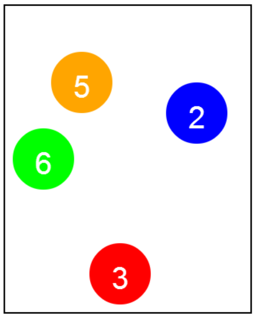

Write a function that draws a pool ball. This function should take as parameters, the color, the number that should go on the pool ball, and the location of the center of the pool ball. The radius of the pool balls should be POOL_BALL_RADIUS, and the font of the number should be POOL_BALL_FONT. The text of the pool ball font should be white. drawPoolBall(Color.orange, 5, 100, 100); drawPoolBall(Color.green, 6, 50, 200); drawPoolBall(Color.red, 3, 150, 350); drawPoolBall(Color.blue, 2, 250, 140); To center the numbers on the pool ball, you should use the getWidth() and getHeight() methods. You are allowed to call these methods on your Text object, such as txt.getWidth(). If you use these function calls in your start function, the result will be as displayed here. 編寫一個函數，繪製一個彈子球。這個功能應該作為參數，顏色，應該對池球的數量，以及池球的中心的位置。 池滾珠的半徑應變量池_球_半徑，和數字的字體應變量池_球_有。池球字體的文本應該是白色的。 畫池球(顏色。橙, 5, 100, 100); 畫池球(顏色。綠色, 6, 50, 200); 畫池球(顏色。紅, 3, 150, 350); 畫池球(顏色。藍色, 2, 250, 140); 要圍繞水池球的數字，你應該使用的獲得寬（）和得到高度（）方法。你被允許調用這些方法對您的文本對象，如文本。獲得寬（）。 如果您使用的啟動功能，這些函數調用，其結果將是為顯示在這裡。
var POOL_BALL_RADIUS = 40; var POOL_BALL_FONT = "30pt Arial"; 變量池_球_半徑 = 40; 變量池_球_有 = "30點宋體";
